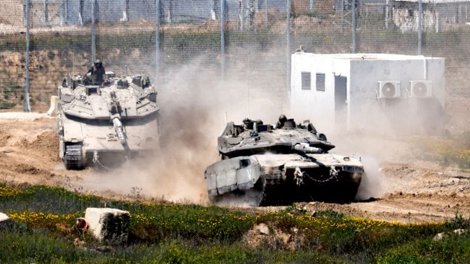

世界苦茶05月06日新闻 | 54条 | 以色列计划吞并整个加沙

以色列计划吞并整个加沙 | 特朗普考虑任命极右翼国家安全顾问 | 罗马尼亚总理辞职政局动荡 | OpenAI放弃转变为盈利公司 | 小米将智能驾驶改名辅助驾驶
透明茶室
苦茶数据
美元兑人民币：7.22（昨日7.20，前日7.22）
美元兑日元：143.79（昨日143.97，前日145.25）
上证指数：3302（昨日3279，前日3283）
标普500指数：5650（昨日5686，前日5604）
比特币：94287（昨日94198，前日95967）
布伦特原油：61.04（昨日59.08，前日61.29）
中国新闻
• 习近平勉青年赴基层 ：中国国家主席习近平说，越来越多年轻人选择到乡村志愿服务，并希望广大青年到国家和人民最需要的地方发光发热。据新华社报道，习近平给新疆克孜勒苏柯尔克孜自治州阿图什市哈拉峻乡谢依特小学戍边支教西部计划志愿者服务队全体队员回信时说，队员们响应中共的号召到西部边疆地区教书育人，在促进当地教育事业发展、促进民族团结进步、促进兴边富民和稳边固边中发挥了积极作用，自身也得到历练和成长。习近平在信中说，在这些年，越来越多年轻人选择到西部、到乡村、到基层志愿服务，无私奉献，展现了新时代中国青年昂扬向上的精神风貌和强国有我的责任担当。
• 云南尾矿坍塌致五人埋 ：中国云南省一尾矿干堆场出现坍塌，五人被埋。据央视新闻报道，云南楚雄州禄丰市一尾矿干堆场星期一出现坍塌，导致五人被埋。目前，当地正全力搜救被埋人员。
• 五一跨区域流动创新高 ：中国交通运输部数据显示，五一假期中国全社会跨区域人员流动量累计14亿6700万人次，日均2亿9300万人次，同比增长8.0%。据《人民日报》，从上个星期四至星期一，中国全社会跨区域人员流动量同比增长，其中铁路客运量累计10169万2000人次，同比增长10.8%，公路人员流动量同比增长7.6%，民航客运量同比增长11.8%。水路客运量累计868万9000人次，日均173万8000人次，同比增长24.9%。
• 五一小城与银发客爆发 ：中国多家旅游平台发布五一出游报告。报告显示，小城居民和“新银发”一族成为今年五一消费升级意愿最强的群体。此外，入境游订单飙升130%，外国游客青睐“中国购”和农耕文化。中国旅行平台去哪儿发布五一出游报告显示，今年去哪儿用户酒店预订遍布全球1837个城市，比去年多432个城市。19至22岁大学生、60+老年旅客增幅最高；三线及以下城市和县城居民增幅高于一线城市。报告也显示，小城居民和“新银发”一族，是今年五一消费升级意愿最强的群体，反向游、文化+旅游，景区门票预订同比增超四成。
• 贵州游船倾覆致10死 ：中国贵州省发生游船倾覆事故，获救的70人均受轻伤。有目击者称，事发前现场刮起大风，下起暴雨和冰雹。据央视新闻报道，贵州毕节黔西市新仁乡乌江百里画廊景区六广河水域星期天下午4时40分许遭遇突发大风，发生游船倾覆事故。截至星期一上午，经排查核实，这次事故造成四艘船倾覆、84人落水。已救出和找到83人，其中医治无效死亡九人，70人尚在医院救治，四人安全未受伤。最后一名失联者在星期一中午寻获，已无生命体征，事故死者人数已增至10人。
• 上海欢乐谷失火无伤亡 ：中国上海欢乐谷景区上星期六晚间失火，在附近游玩的游客以为是表演特效。景区后来发声明说，事故未造成人员伤亡，已在星期天恢复正常开放。综合极目新闻和封面新闻报道，位于上海市松江区佘山林湖路888号的欢乐谷景区，上星期六晚7时30分许突然失火。有游客受询时称，在附近游玩，最初以为是表演特效，后来才知道是景区内的建筑失火。景区客服人员受访时证实，确实有失火，但具体情况需要专人答复。
• 张家界游客滞留喊退票 ：中国多名网民上周称，湖南张家界国家森林公园出现景区拥堵问题，上千名游客深夜滞留山上大喊退票。对此，中共张家界市武陵源区委旅游工作委员会办公室发布情况通报，称对所有受影响的游客表示诚挚的歉意。据澎湃新闻上星期六报道，多名网民上星期五通过社交平台反映称，湖南张家界国家森林公园出现景区拥堵问题，天梯排队三小时拍摄不到两分钟，晚上排队七八个小时才下山，上千名游客深夜滞留山上大喊退票。澎湃新闻当晚也拨打张家界国家森林公园客服热线，接线工作人员说，五一假期景区内客流量会比平时大一些，“但都是正常疏散，就是排队的时间要长一点”。
• 中埃空军联训落幕 ：中国和埃及空军组织为期18天的联合训练在星期天结束，这是两国空军首次组织联训。据新华社报道，中埃“文明之鹰-2025”空军联合训练在埃及当地时间星期天上午，在埃及空军某基地闭幕。报道称，这是中国空军首次出动体系力量赴非洲开展联训，进驻后短时间内即完成装备展开、理论授课、任务规划、指控协同等准备工作，顺利实现首飞，体现了中国空军远程投送、敏捷部署和体系作战能力。
• 蓝佛安吁坚持多边合作 ：中国财政部长蓝佛安出席亚细安和中日韩财长和央行行长会议时表示，全球化遭遇逆流，10+3区域经济展现较强韧性、拥有较大增长空间，但也面临复杂严峻的内外部挑战，他呼吁各方应坚定落实10+3领导人会议共识，坚持多边主义和自由贸易。据中国财政部微信公众号消息，第28届亚细安与中日韩财长和央行行长会议星期天在意大利米兰举行，会议主要讨论了全球和区域宏观经济形势、10+3区域财金合作等议题，并发表了联合声明。中国财政部部长蓝佛安出席并作为联合主席主持会议部分议题，副部长廖岷陪同参会。蓝佛安表示，当前世界经济格局深刻调整，全球化遭遇逆流，单边主义、保护主义抬头，不稳定不确定性因素明显增多。10+3区域经济展现较强韧性、拥有较大增长空间，但也面临复杂严峻的内外部挑战。
• 汕头文革园区已清空 ：中国广东汕头的塔山风景区内，旨在反思文化大革命的“塔园”主题园区已无文革痕迹，地方政府计划将塔山打造成玩具之城。据香港《明报》报道，塔山风景区内的文革主题园区“塔园”20年来从广受关注到被围挡、遮盖，如今已看不到文革痕迹。景区不再收取门票，盘山公路也不再允许汽车上去。塔园所在处变成了僻静地段，有登山者路过一个天坛造型建筑，也不清楚那就是曾经赫赫有名的文革博物馆。报道称，当前馆外数十块雕刻各界名人反思文革字句的石碑已被搬走，馆内也已清空。
• 菲称中船非法科研 ：菲律宾海岸警卫队声称，一艘中国科考船上周在菲律宾专属经济区进行非法海洋科研活动，菲方已派遣海警船和飞机对其进行拦截。路透社报道，菲律宾海岸警卫队星期一发布声明说，菲方上星期四发现中国科考船“探索三号”进入菲国专属经济区，距离菲国北部伊罗戈海岸约92海里。声明指探索三号航行轨迹异常，与航行自由原则不符，且涉嫌从事海洋科学研究活动，侵犯菲律宾领土主权。
亚太印太新闻
• 国民党高层涉连署案 ：台湾在野的国民党台北党部主委黄吕锦茹不服被羁押提抗告，高等法院最快星期一晚间裁定。综合台湾《自由时报》《联合报》报道，台北地检署侦办蓝营罢免民进党立委吴思瑶、吴沛忆的连署书造假案，查出黄吕锦茹涉案且罪嫌重大，4月18日向台北地方法院提出将她声押禁见，法院以证据不足予以驳回，黄吕锦茹当庭获释。台北地检署不服裁定，之后向台湾高等法院提出抗告。高院裁定发回更裁，台北地院4月25日以涉嫌重大、且有串供灭证可能为由，裁定从当天起将黄吕锦茹羁押两个月，并禁止接见、通信。
• 台将组战斗型内阁 ：台湾政府据报将在5月20日后改组内阁，转型为“战斗型内阁”。民众党团总召黄国昌对此表示，民众需要的不是斗鸡政府，而是要做实事的政府，并呼吁行政院长卓荣泰要知所进退。中时新闻网报道，台湾总统赖清德将进行内阁改组，维持卓荣泰原职，并计划启用具论述能力的阁员打造“战斗型内阁”，迎战可能在7月进行的罢免投票和后续立委补选。首波被点名调整的内阁成员包括内政部长刘世芳、卫福部长邱泰源、经济部长郭智辉、国防部长顾立雄、国发会主委刘镜清等人。
• 台府否认战斗内阁说 ：针对台媒报道称台湾总统赖清德5月20日后将进行内阁改组，并起用论述强的阁员，转型为“战斗型内阁”，行政院发言人李慧芝指出，此为错误消息，内容纯属臆测。政治立场亲蓝的《中国时报》星期一报道，罢免国民党立委的罢团陆续送出二阶罢免连署后，民进党看好罢蓝气势，据了解在5月20日后、罢免投票前，赖清德将进行内阁改组，行政院长卓荣泰不动，但起用论述强的阁员，转型为战斗型内阁，迎战可能在7月进行的罢免投票及之后的立法院补选。报道提到，首波换血重点约有五个部会首长，主要是引起较多民怨争议及非赖系的首长，包括卫福部长邱泰源、经济部长郭智辉、国防部长顾立雄、内政部长刘世芳以及台湾的国家发展委员会主委刘镜清。
• 巴军两日两次试射 ：印度与巴基斯坦局势紧张之际，巴基斯坦两天内第二次进行导弹试射。法新社报道，巴基斯坦军方星期一发布声明说，军方进行一次导弹试射，射程为120公里。此次试射旨在确保部队的作战准备状态，并验证关键技术参数，包括导弹的先进导航系统和增强型精度。据新华社早前报道，巴基斯坦三军新闻局星期六发布声明说，军方当天成功试射一枚“阿布达利”地对地短程弹道导弹。导弹射程达450公里，可用于对目标进行精确打击，有助于增强巴基斯坦军队的战略威慑能力。
• 印度暂停河水共享条约后开始提升水电项目的蓄水能力 ：知情人士告诉路透，在与巴基斯坦的新一轮紧张局势导致印度暂停水资源共享协议之后，印度已开始着手提高克什米尔地区两个水电项目的水库蓄水能力。这项工程可能不会立即威胁到巴基斯坦的供水，但如果其他水坝启动类似的工程，巴基斯坦最终可能会受到影响。巴基斯坦的大部分灌溉和水力发电都依赖于流经印度的河流。
• 印尼总统将会盖茨 ：印度尼西亚总统普拉博沃本周将会见亿万富翁比尔·盖茨，后者表示愿意为印尼社会项目提供支持。彭博社报道，普拉博沃计划于星期三在印尼会见盖茨。普拉博沃在星期一举行内阁会议前表明，盖茨希望在这次会晤中表达对印尼的支持，“甚至愿意提供帮助，尽管我不清楚具体通过什么形式”。普拉博沃重申，他的政府会继续专注于为学生提供免费餐食的计划。
• 巴印互禁对方货物过境 ：巴基斯坦宣布禁止通过陆路、海路和空路在巴基斯坦境内转运进口印度产货物，同时叫停了第三国经巴基斯坦向印度出口货物的过境运输。中新社报道，巴基斯坦《黎明报》报道，巴基斯坦商务部星期天发表声明说，有关禁令不适用于已签发提单或信用证的货物，发布相关禁令是为了“国家和公众的利益”。另据路透社报道，印度外贸局前一天发布通告，禁止进口原产于巴基斯坦或经巴基斯坦过境的货物，同时禁止悬挂巴基斯坦国旗的船只停靠印度港口。禁令即时生效。
• 韩民调李在明领先 ：星期一发布的一项民意调查显示，假设新一届总统选举候选人出现三人对决局面，在野党共同民主党前党首、总统候选人李在明的支持率超过46%，位列第一。韩联社报道，根据民调机构Realmeter发布的调查结果，假设李在明与执政党国民力量党总统候选人金文洙和改革新党候选人李俊锡对决，李在明、金文洙和李俊锡的支持率分别为46.6%、27.8%、7.5%。在民调进行期间，金文洙正式当选国民力量总统候选人，而李在明涉嫌违反《选举法》案终审判决发回重审。受此影响，与上一次调查相比，李在明的支持率下滑4.3个百分点，金文洙则上升4.5个百分点。
• 伊朗愿调解印巴冲突 ：印巴关系近期急剧恶化，伊朗外交部长阿拉格齐将在结束巴基斯坦行程几天后到访印度。法新社报道，伊朗表示愿意在印度和巴基斯坦之间充当调解人，外长阿拉格齐上周与巴基斯坦外长达尔的通话中说，德黑兰准备好继续努力，帮助缓解印巴紧张局势。阿拉格齐星期一在巴基斯坦首都伊斯兰堡进行正式访问。他表明，伊朗准备通过斡旋来解决冲突。
科技新闻
• 马克龙邀美科研人才 ：欧洲正努力吸引科研人才，法国总统马克龙呼吁受特朗普政府政策影响的美国科研人员到欧洲发展。彭博社报道，马克龙星期一在索邦大学发表主题演讲，抨击美国特朗普政府关闭大学科研项目的决定。特朗普政府今年1月上台后，对科研经费和联邦机构支出进行大规模削减，引发各国争夺美国科研人员。
• 小米改口辅助驾驶 ：中国加强智能驾驶行业监管，小米汽车官方网站及app上对其SU7车型的智能驾驶系统都已经改为“辅助驾驶”。综合界面新闻和《经济观察报》报道，小米在星期天已经调整了SU7新车定购页面中的措辞，将“智驾”更名为“辅助驾驶”。这一变更体现在SU7车型的两个版本上，其中“小米智驾 Pro”更名为“小米辅助驾驶 Pro”，而SU7 Pro/Max车型的“小米智驾 Max”则更名为“小米端到端辅助驾驶”。
• 苹果更新安卓转移功能 ：苹果公司最近更新了其为安卓用户设计的“转移到 iOS”应用，新增多项功能，使从安卓用户切换到iPhone变得更快、更丝滑。用户使用 USB-C 数据线或 USB-C 转 Lightning 数据线在iPhone与安卓手机进行有线数据传输的速度现在更快，且在迁移过程中还会显示使用 iOS 的提示。苹果还表示，安卓设备上的录音现会根据文件格式迁移到语音备忘录应用或文件应用。此外，还新增支持了以下语言：孟加拉语、古吉拉特语、卡纳达语、马拉雅拉姆语、马拉地语、奥里亚语、旁遮普语、泰米尔语、泰卢固语和乌尔都语。
• 美议员拟追踪AI芯片流向 ：美国一位国会议员计划在未来几周内提出法案，以核实英伟达等公司制造的人工智能芯片在出售后的位置。这项对芯片进行监控的举措得到了美国两党议员的支持，旨在解决有关英伟达芯片大规模走私至中国、违反美国出口管制法的报道。伊利诺伊州民主党国会众议员比尔·福斯特表示，追踪售后芯片位置的技术已经存在，其中大部分技术已经内置于英伟达的芯片中。福斯特计划在未来几周内提出一项法案，指示美监管机构在两个关键领域制定规则：跟踪芯片售后位置以确保它们符合出口管制许可；阻止未获得出口管制适当许可的芯片启动。这一法案将给予商务部六个月的时间来制定相关法规。
• OpenAI放弃转变为营利性公司的计划： OpenAI周一放弃了将其强大的人工智能业务置于营利性实体控制之下的一项颇具争议的计划。而是继续将由公司创立时的非营利性董事会管理。这一举措可能会使OpenAI未来的融资计划变得复杂。与传统董事会必须以股东利益为重不同，OpenAI的非营利董事会负有 “造福全人类” 的信托责任。OpenAI表示，在与公民领袖以及加州和特拉华州的总检察长进行磋商后，公司决定放弃了这项更激进的重组计划。
财经新闻
• 欧股创连涨纪录 ：欧洲股市连续第十个交易日上涨，创2021年8月以来最长连涨纪录，投资者关注企业交易动态和关税相关言论。斯托克欧洲600指数星期一上涨0.2%，奥地利第一储蓄银行领涨。受OPEC+决定再次大幅增产影响，油价因全球供应过剩担忧而下跌，能源股跑输。英国市场星期一因公众假日休市。美国总统特朗普暗示最快可能在本周达成部分贸易协议，但本周没有计划与中国国家主席习近平会谈。斯托克欧洲600指数已完全收复4月初特朗普宣布关税措施以来的所有跌幅。
• 美国会要求强制25家中国在美上市公司退市： 美国国会两个委员会的负责人敦促美国证交会强制阿里巴巴等中国上市公司从美国证券交易所退市，称这些企业与中国军方存在危害美国国家安全的关联。众议院中国问题特别委员会的共和党主席穆勒纳尔和参议院老龄事务委员会的共和党主席斯科特上周五致函美国证交会主席阿特金斯，要求他领导的机构对在美国交易所上市的25家中国集团采取行动。他们列出的目标还包括百度、小马智行、京东、大全新能源、禾赛科技、腾讯音乐、微博。信函中写到：“这些实体受益于美国投资者的资本，却在推进中共的战略目标……支持军事现代化和严重侵犯人权。他们还对美国投资者构成不可接受的风险。”
• 美关税重创低收入户 ：美国智库税收与经济政策研究所的分析报告显示，美国总统特朗普的关税措施对低收入家庭带来的冲击是高收入群体的三倍以上。这份报告概述了如果现行关税在明年继续实施，不同收入水平的美国人所受到的影响。根据分析，由于物价上涨，年收入在2万8600美元或以下的人所面对的额外花费将占收入的6.2%，而年收入至少为91万4900美元的最富有美国人预计将多花费收入的1.7%。年收入在5万5100美元至9万4100美元之间的中等收入家庭则须多花5%。
• 台对陆出口占比下降 ：台商是否撤资大陆引起两岸官方隔空论战后，台湾经济部发布数据称，今年第一季，台湾对中国大陆及香港的出口占比降至28.3%，凸显台湾对中国大陆市场的依赖已逐年下降。台湾经济部上星期五在官网发布的数据显示，今年第一季，台湾与中国大陆贸易额为412亿美元，同比增长3.5%。数据还显示，截至今年3月，台湾经核准赴大陆投资金额约为3.43亿美元，同比减少62.98%。
• 台币飙升央行发声 ：新台币汇率连续多日飙升，星期一早盘一度冲破1美元兑30新台币关卡，吸引大批民众抢汇。台湾中央银行总裁杨金龙当天下午在记者会上发表声明，强调央行从未参与台美经贸小组谈判，美国也从未要求新台币升值。综合壹苹新闻网、TVBS新闻网和ETtoday新闻云报道，杨金龙在声明中说，4月9日迄今，美国总统特朗普宣布对等关税暂缓90天实施，并开始与主要贸易对手协商，全球股市回温。在此期间外资汇入资金投资台股，加以厂商因新台币升值预期心理而增加美元供给，致截至星期一新台币兑美元汇率波动幅度扩大。他强调，台央行并未参与台美经贸工作小组谈判，美国财政部也未要求新台币升值。近年来台湾对美国贸易顺差扩大，主要反映美国对台湾资通信产品需求大增所致，而非汇率因素。央行不会操纵汇率，且近年来台湾也未被列为汇率操纵地。
• 新台币升值致App卡顿 ：新台币兑美元继续升值，吸引台湾民众换汇，导致多家银行软件出现卡顿，一度难以登入。据台湾《镜周刊》报道，新台币兑美元持续升值，星期一再度飙升，开盘强势冲破1美元兑30元新台币整数关卡，一度触及29.7元。不少民众急忙打开手机App准备换汇，包括台新、永丰、国泰、中信等多家银行的App系统出先卡顿，一度难以登入，网民在社媒上称“全台网银过劳中”。新台币连续多个交易日兑美元升值。路透社上个星期五下午引述台湾一名当地交易员说，新台币汇率飙升是由于散户投资者撤回海外投资，以及出口商恐慌性抛售美元。
• 朱立伦批汇率重伤出口 ：台湾在野的国民党主席朱立伦说，这几天新台币兑美元从33.2元一路升值到30元以下，新台币升值近10%，重伤台湾出口厂商。他批评政府只顾大内宣、只关心面子工程，“却不知企业已哀鸿遍野！”朱立伦星期一在脸书发文称，1985年日本在压力下日元大幅度升值，结果泡沫破裂、经济崩溃、失落十年。他写道，今天的台湾，面对美国关税战，还没正式坐上谈判桌，在3月时就已经先把台积电对美1000亿美元投资大礼包送去，“这不是战略布局而是未战先送、未战先降”。朱立伦进一步说，一直不断预警的汇率战更是未战先败，这几天新台币兑美元从33.2元一路升值到30元以下，新台币升值近10%，重伤台湾出口厂商，特别是许多传统产业本来利润率就不高。
• 金价连跌聚焦美联储 ：中美贸易紧张关系出现缓解迹象和美国就业数据优于预期的消息，令金价上星期五面对阻力，连续两周下跌。本周，分析师预期贸易谈判消息将继续令金价波动，市场也将聚焦美国联邦储备局本周的利率决策和美联储主席鲍威尔的讲话。现货金价上星期五微升0.05％或1.29美元，收报每安士3240.49美元，全周跌2.39％，今年涨幅仍达24.36％；期货金价上星期五则上涨0.65％或21.10美元，收报每安士3243.30美元，全周共跌1.67％，今年涨幅达20.47％。中国商务部上周指出，美方已多次表达就关税问题进行谈判的意愿，北京的谈判大门是敞开的。
• 中国恢复采购液化气 ：知情贸易商透露，趁着价格跌至约一年最低水平，中国企业恢复在现货市场采购液化天然气，逆转过去数月的相对不活跃景象。彭博社星期一引述知情贸易商报道，上周有至少两批出货量以每百万英热单位10美元的价格售出。若维持这样的售价水平，中国买家本周或将加大采购。中国是去年液化天然气的最大进口市场，但其今年1月至4月的接收量较去年同期下滑24%。中国减少采购液化天然气和转售存货，是因为其售价昂贵，以及国内需求疲弱。
• 特朗普称关税或再降 ：美国总统特朗普表示，他“愿在某个时候”降低对中国商品加征的关税，因为当前的进口税率已经高到这两个世界上最大的经济体几乎停止贸易往来的地步。彭博社报道，特朗普至今对中国进口商品加征了145%的关税，中国也对美国产品加征125%的关税作为反制措施。这些举措扰乱了全球市场，并可能推高制造设备以及许多美国人依赖的廉价商品，包括服装和玩具等的价格。特朗普接受全国广播公司星期天节目《会见媒体》访问时说：“我会在某个时候降低关税，要不然，你将永远无法跟他们做生意，而他们非常希望跟我们做生意。”
• 东南亚制造业陷萎缩 ：关税大战冲击下，亚细安制造业在4月的整体经营状况出现16个月来的首次萎缩。采购经理指数自3月的50.8跌至48.7，创下自2021年8月以来的最低点。根据标普全球星期一公布的最新数据，亚细安制造业PMI中的两个核心指标新订单与产出，分别终结了此前连续六个月和13个月的增长，均出现近44个月以来的最显著下滑。采购经理指数高于50，意味制造业处于扩张状态，低于50则反映陷入萎缩。
• 中成俄土豆三大供应国 ：俄罗斯媒体报道，中国去年成为俄罗斯马铃薯的三大供应国之一。俄罗斯卫星通讯社星期天引述联合国商品贸易统计数据库、国家统计部网站和公开数据统计报道，中国去年成为俄罗斯马铃薯三大供应国之一。俄罗斯去年从白罗斯进口的马铃薯数量最多，为19万3800吨。原是最大供应国的埃及，俄罗斯输出7万5300吨马铃薯，跌至第二位。
• 非洲兴起人民币结算网 ：港媒报道，非洲的肯尼亚、尼日利亚等国家，正兴起民间的人民币支付网络，以降低对美元的依赖。香港《南华早报》星期天报道称，随着地缘政治紧张局势升温，非洲贸易商越来越多地避开美元，转而使用人民币，构建起“非正式的人民币支付网络”，与世界第二大经济体中国做生意。报道称，在位于肯尼亚首都内罗毕东北部的商业中心伊斯特利，当地商人已建立一套本地化支付系统，用以结算来自中国的进口货款。物流公司在其中发挥关键作用，提供肯尼亚先令和人民币的兑换服务，使商人得以用本地货币付款，而物流公司则代表他们向中国卖家支付人民币。
• 美将对海外电影征重税 ：美国总统特朗普宣布，对所有在美国以外制作的电影征收100%的关税。路透社报道，特朗普星期天在社交媒体平台说，美国电影人和制片公司转向海外制作，导致好莱坞蒙受严重打击，他已授权商务部和贸易代表办公室立即启动程序落实这项新关税。他说，由于其他国家提供各种激励措施吸引美国电影人和制片公司，美国电影业正在“快速死亡”。
• 澳特朗普称正谈公平协议 ：美国总统特朗普当地时间星期天表示，美国正在与包括中国在内的多个国家就贸易协议进行会谈，他与中国打交道的首要目标是达成一项公平的贸易协议。据路透社报道，特朗普星期天在空军一号专机上对记者表示，他本周没有与中国国家主席习近平通话的计划，但美方官员正就不同议题与中方官员沟通。当被问及本周是否会宣布任何贸易协议时，特朗普表示“很有可能”，但未透露详情。
• 美国4月服务业加速扩张，但投入物价指数创逾两年新高 ：美国4月服务业PMI环比增长0.8点至51.6，衡量企业支付的材料和服务价格的指标则飙升至逾两年最高水平，这表明关税导致的通胀压力正在增加。调查显示，美国服务业企业担心特朗普的关税对价格的影响，以及政府寻求大幅缩减开支导致联邦支出锐减。
• 关税扰乱前景，美联储5月会议料按兵不动 ：美联储周三将结束两天会议，无疑将会维持利率不变，但由于特朗普总统的关税给经济前景蒙上了不确定性的阴影，这可能是最后一次能够如此笃定预测结果的美联储会议。美联储决策官员预计，关税将推高通胀和失业率，但具体程度和持续时间尚不清楚。而就业数据强劲为美联储提供了继续等待的空间。美联储要到6月才会发布新的季度预测，因此投资者关注主席鲍威尔的会后记者会，以寻找有关利率走势的线索。
俄乌战争
• 俄称普京暂无中东行程 ：俄罗斯克里姆林宫说，俄总统普京与美国总统特朗普有必要会晤，但普京没有计划在5月中旬访问中东。美国新闻网站Axios报道，特朗普定于5月13日访问沙特阿拉伯，随后访问卡塔尔和阿拉伯联合酋长国。路透社报道，克里姆林宫发言人佩斯科夫在星期一的记者会上被问及俄美元首在沙特阿拉伯会晤的可能性，佩斯科夫表明，双方有必要会晤，但普京没有计划前往中东。
• 俄枪击事件致三警死 ：俄罗斯南部达吉斯坦地区发生枪战，三名警察遭袭殉职。路透社报道，达吉斯坦内务部星期一说，当天发生一起枪战，不明身份的枪手向交警开枪，导致三名警察死亡。一名枪手已被击毙。发布在即时应用通讯Telegram上的视频显示，三名警察的遗体躺在城市街道的一辆警车旁。路人停下查看遗体时，街道远处传来更多枪声。
• 普京谈俄中25年关系 ：俄罗斯总统普京在一档纪录片中透露，25年前，在看到经济增长中心向亚太转移，他决定积极与中国建立关系。据俄罗斯卫星通讯社星期天报道，普京在俄罗斯1电视台播放的纪录片《俄罗斯·克里姆林宫·普京·25年》中称，他在25年前就注意到经济增长中心正向亚太地区转移，不仅向中国，也亚太地区的其他国家。谈到俄中关系时，普京说，在25年前出任俄罗斯总统之初，他很难百分百说明俄中关系的质量。俄中是邻国，应当建立友好关系，这是两国发展关系的关键因素。两国也在此基础上逐渐建立起关系。在当前世界动荡不安下，俄中关系更为可靠紧密，这样的关系正增强世界的稳定性。
其他新闻
• 美军空袭致也门多人伤 ：也门胡塞武装控制的卫生部门星期一说，美军4日晚至5日凌晨对也门首都萨那和其他三个省发动多次空袭，在萨那造成至少14人受伤。萨那居民告诉新华社，战机密集飞过城市上空，多地传出剧烈爆炸声。一些居民受伤，多家商店受损，救护车和民防车辆已赶往几个遭袭地点。另据胡塞武装控制的马西拉电视台报道，美国战机还对马里卜省发动了两次空袭；对焦夫省发动了三次空袭；对萨达省首府萨达市以东地区发动了三次空袭，那里是胡塞武装在也门北部的主要据点。
• 伊朗否认袭以机场 ：伊朗否认为也门胡塞武装组织袭击以色列主要国际机场。法新社报道，胡塞武装星期天对以色列中部城市特拉维夫的本·古里安国际机场发动导弹袭击，以色列总理内坦亚胡誓言对胡塞武装和它的背后势力伊朗采取强硬回应。伊朗外交部则在星期一的一份声明中说：“也门方面支持巴勒斯坦人民的行动，是出于团结而做出的独立决定。”
• 以军计划全面接管加沙 ：以色列安全内阁5月5日批准了占领整个加沙并控制领土的计划。以军总参谋长埃亚勒·扎米尔4日表示，已向数万名预备役军人发出征召令，以支持扩大在加沙的军事攻势。以色列认为由哈马斯分发人道主义援助加强了该组织在加沙的统治，且哈马斯将援助据为己有来增强其能力。以色列在新计划中准备将援助分发交由私人安保承包商进行。以色列还在与多个国家就所谓“自愿移民”计划进行接触，试图在其接管加沙时重新异国安置加沙民众。以色列官员表示，新计划旨在帮助以色列实现击败哈马斯和释放被扣押人质的战争目标。
• 以军或启动地面战 ：以色列国防官员说，美国总统特朗普下周访问中东期间，加沙人质协议存在机会窗口。路透社报道，以色列高级国防官员星期一发表上述言论。这名官员表明，如果无法达成人质协议，以军将以“极大强度”在加沙展开“基甸战车”行动，并且不会停止，直到实现所有目标。以色列安全内阁星期天批准扩大加沙军事行动的计划，内容包括占领并控制整个加沙地带。以色列国防军已征召数万名预备役军人，为扩大后的军事攻势做准备。
• 特朗普考虑换国安顾问 ：美国总统特朗普考虑任命白宫副幕僚长米勒担任国家安全顾问，原国安顾问沃尔兹已被特朗普解除职务。路透社报道，特朗普星期天从佛罗里达州飞回白宫时，在总统专机空军一号上向媒体表示，他正在考虑任命米勒担任他的国安顾问。特朗普还表示，他预计将在六个月内决定新的人选。美国总统国安顾问由总统任命，无须参议院批准。 （翻评：这个完蛋，这米勒是一个极右翼种族主义者。）
• 特朗普称不知是否守宪 ：美国总统特朗普在受访时被问到他作为总统是否必须维护宪法时，他的回答是“我不知道”。《纽约时报》报道，特朗普在全国广播公司星期天播出的专访中表示，他不知道维护宪法是不是他的职责。美国宪法第五修正案明确规定，生活在美国领土上的人都有权获得正当的法律程序。NBC节目《会见媒体》主持人韦尔克说，国务卿鲁比奥指美国公民和非公民都有权享有正当的法律程序，她问特朗普是否同意鲁比奥的观点，特朗普说：“我不知道。我不是，我不是律师。我不知道。”
• 教宗旧座驾改诊所车 ：梵蒂冈官方媒体消息，已故教宗方济各的其中一辆教宗座驾，正被改装成加沙地带儿童流动诊所。这是方济各的遗愿之一。路透社报道，方济各2014年访问圣地时使用的这辆教宗座驾，正在安装诊断和急救医疗设备，以为巴勒斯坦地区的儿童病患提供医疗服务。加沙地带的医疗设施因以色列入侵而遭到严重破坏。梵蒂冈新闻网星期天报道，多个月前，方济各已将改装教宗座驾的工作委托给天主教援助组织“耶路撒冷明爱”。
• 德选择党状告保卫局 ：德国选择党5月5日表示，已向科隆的行政法院对联邦宪法保卫局提起投诉。此前，联邦宪法保卫局将选择党认定为“右翼极端主义”组织。
• 罗马尼亚总理辞职，局势陷入混乱： 罗马尼亚总理马塞尔·乔拉库周一宣布辞职，此前极右翼候选人轻松赢得该国总统选举首轮投票，此举进一步加剧了该国的动荡。据当地媒体援引罗马尼亚总统行政部门的消息报道，周二上午将任命一名临时总理。乔拉库自2023年以来一直担任总理，领导执政的中左翼社会民主党。社会民主党总统候选人克林·安东内斯库在周日备受关注的选举中名列第三。